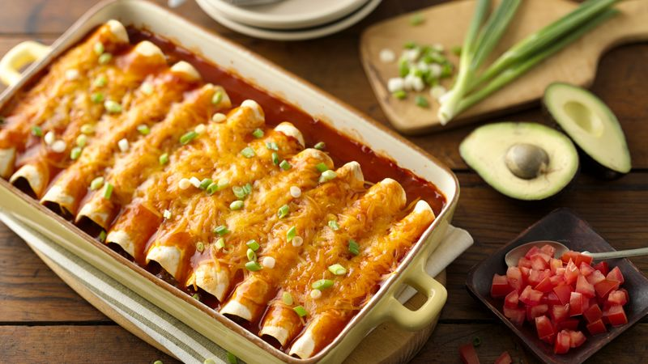

Beef Enchiladas

Description
Enchiladas are a great food to have on a cold day when you need something to warm you up inside.
Click here to view the original recipe.
Ingredients
- 1 lb ground beef
- 2 cans Old El Paso red enchilada sauce
- 1 can Old El Paso green chiles
- 1 package flour tortillas (6 inch)
- 1 1/2 cups shredded cheddar cheese
Steps
- Heat oven to 375 degrees. Spray 3-quart baking pan with cooking spray.
- In nonstick skillet, cook beef over medium-high heat 5-7 minutes, stirring occasionally until thoroughly cooked and drain.
- Stir in 1/2 cup of enchilada sauce and chiles with beef.
- Spread 1/2 cup enchilada sauce evenly in baking dish. Spread 1/4 cup beef mixture down center of each torilla, sprinkle with 1 tablespoon cheese.
- Wrap tortillas tightly around filling, placing seam side down in baking dish. Top with remaining enchilada sauce and sprinkle with remaining cheese.
- Bake 20-25 minutes or until hot and bubbly. Let stand 5 minutes before serving.